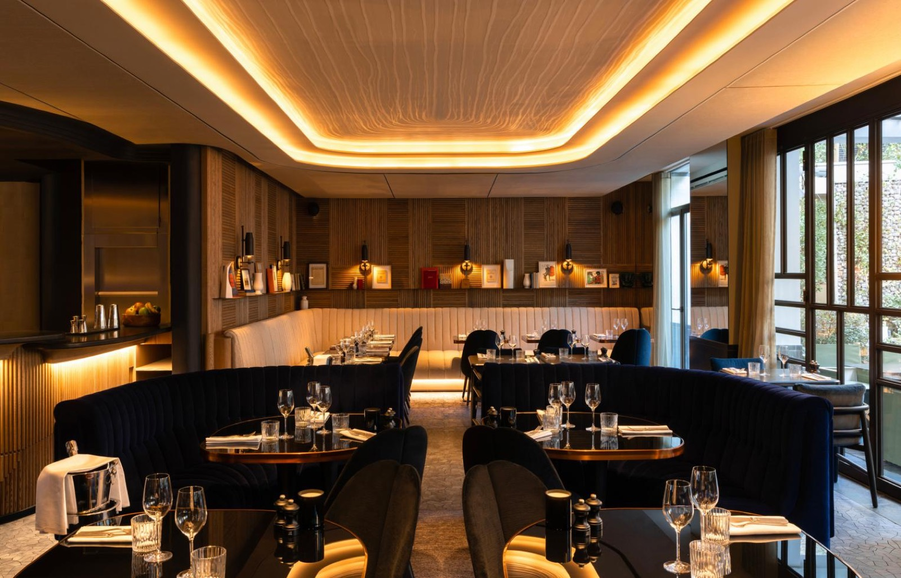

12h00
On démarre en douceur en activant ses papilles.
se dévoile le 15 août à 10h30
12h00
Brunch
Pimpan, à l'hôtel Dame des Arts
Confirmée, pour deux

On commence en douceur. Banquettes de velours bleu nuit, tables cerclées de laiton, grandes baies sur la terrasse arborée. Œufs, viennoiseries, bloody mary si le cœur t'en dit, et tout le temps de parler doucement.
4 rue Danton, 75006 Paris · Métro Odéon (4, 10), à 3 minutes
Fin vers 14h00